Olá, Usuário
Mantenha seus dados atualizadospara uma experiência mais segurae personalizada.

Sua cidade – UF
Atualize suas informações de cadastro, contato e preferências.
Suas informações de identificação.
Canais para receber avisos e atualizações.
Sua região ajuda a receber informações mais relevantes.
Contatos de confiança para situações de alerta.
Personalize como deseja receber as informações.
Gerencie o acesso e a segurança da sua conta.